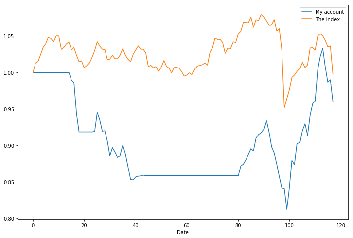

# 查看当前挂载的数据集目录, 该目录下的变更重启环境后会自动还原
# View dataset directory. This directory will be recovered automatically after resetting environment.
# !ls /home/aistudio/data
# 查看工作区文件, 该目录下的变更将会持久保存. 请及时清理不必要的文件, 避免加载过慢.
# View personal work directory. All changes under this directory will be kept even after reset. Please clean unnecessary files in time to speed up environment loading.
# !ls /home/aistudio/work
# !pip install tushare
# !pip install lightgbm # -t /home/aistudio/external-libraries
# !pip install mpl_finance
Looking in indexes: https://pypi.mirrors.ustc.edu.cn/simple/
Collecting tushare
?25l Downloading https://mirrors.tuna.tsinghua.edu.cn/pypi/web/packages/af/4c/72c3f36778588beaf2d50fbdade585d781fc6ee841db7d16737964153c91/tushare-1.2.54-py3-none-any.whl (213kB)
|████████████████████████████████| 215kB 20.7MB/s eta 0:00:01
?25hCollecting lxml>=3.8.0 (from tushare)
import numpy as np
import pandas as pd
import os
import tqdm
path = 'stock/OldData/002242.SZ_NormalData.csv'
df = pd.read_csv(path)
base_path = 'stock/features'
stock_info_copy = pd.read_csv(os.path.join(base_path, 'stock_info.csv'))
stock_info = pd.read_csv(os.path.join(base_path, 'feature0.csv'))
stock_info.drop(['open', 'high', 'low', 'close'], axis=1, inplace=True)
# stock_info.drop_duplicates(inplace=True)
# 添加涨跌停信息
limit_info = pd.read_csv(os.path.join(base_path, 'limit.csv'))
limit_info['U-D'] = limit_info['U'] - limit_info['D']
limit_info.drop(['U', 'D'], axis=1, inplace=True)
limit_info = limit_info.rename(columns={'date':'trade_date'})
stock_info = stock_info.merge(limit_info, on='trade_date', how='left')
del limit_info
feature_col = ['month', 'weekday', 'vol', 'open_transform', 'high_transform',
'low_transform', 'close_transform',
'amount_index_000001_shift_1', 'amount_index_000001_shift_3',
'amount_index_000001_shift_5', 'close_index_000001_shift_1',
'close_index_000001_shift_3','close_index_000001_shift_5',
'amount_shift_1', 'amount_shift_3', 'amount_shift_5', 'close_shift_1', 'close_shift_3',
'close_shift_5', 'turnover_rate', 'U-D']
标签读取#
label_path = os.path.join('stock','label', 'label.csv')
label = pd.read_csv(label_path)
label = label[['ts_date_id', 'label_final', 'open', 'high', 'low', 'close', 'ma5', 'ma13', 'ma21', 'name']]
# stock_info.drop(['open', 'trade_date', 'ts_code'], axis=1, inplace=True)
label['ts_date_id'] = label['ts_date_id'] - 1
stock_info = stock_info.merge(label, on='ts_date_id', how='left')
stock_info.dropna(inplace=True)
stock_info = stock_info.reset_index(drop=True)
print(len(stock_info))
2475341
模型训练#
len(feature_col)
21
trn_col = feature_col
# trn_col.remove('month')
# 'high', 'low', 'close', 'pre_close',
# trn_col = list(set(trn_col))
label = 'label_final'
# trn_date_min = 20170103
# trn_date_max = 20190416
# val_date_min = 20190417
# val_date_max = 20190429
# test_date_min = 20190417
# test_date_max = 20191218
trn_date_min = 20160103
trn_date_max = 20190831
val_date_min = 20190101
val_date_max = 20190419
test_date_min = 20190901
test_date_max = 20200301
trn_data_idx = (stock_info['trade_date'] >= trn_date_min) & (stock_info['trade_date'] <= trn_date_max) & (stock_info['high']!=stock_info['close'])
val_data_idx = (stock_info['trade_date'] >= val_date_min) & (stock_info['trade_date'] <= val_date_max)
test_data_idx = (stock_info['trade_date'] >= test_date_min) & (stock_info['trade_date'] <= test_date_max)
trn = stock_info[trn_data_idx][trn_col]
trn_label = stock_info[trn_data_idx][label].values
val = stock_info[val_data_idx][trn_col]
val_label = stock_info[val_data_idx][label].values
test = stock_info[test_data_idx][trn_col]
test_label = stock_info[test_data_idx][label].values
print('rate of 0: %.4f, rate of 1: %.4f' % (np.sum(trn_label==0)/len(trn_label), np.sum(trn_label==1)/len(trn_label)))
print('trn data:%d, val data:%d, test data:%d' % (len(trn), len(val), len(test)))
print('number of features:%d' % len(trn_col))
print(feature_col)
rate of 0: 0.7762, rate of 1: 0.2238
trn data:2011124, val data:201234, test data:334367
number of features:21
['month', 'weekday', 'vol', 'open_transform', 'high_transform', 'low_transform', 'close_transform', 'amount_index_000001_shift_1', 'amount_index_000001_shift_3', 'amount_index_000001_shift_5', 'close_index_000001_shift_1', 'close_index_000001_shift_3', 'close_index_000001_shift_5', 'amount_shift_1', 'amount_shift_3', 'amount_shift_5', 'close_shift_1', 'close_shift_3', 'close_shift_5', 'turnover_rate', 'U-D']
# 模型训练及评价
import lightgbm as lgb
from sklearn import metrics
param = {'num_leaves': 31,
'min_data_in_leaf': 20,
'objective': 'binary',
'learning_rate': 0.06,
"boosting": "gbdt",
# "bagging_freq": 1,
# "bagging_seed": 11,
# 'objective':'multiclass',
"metric": 'None',
"verbosity": -1}
trn_data = lgb.Dataset(trn, trn_label)
val_data = lgb.Dataset(val, val_label)
num_round = 666
# clf = lgb.train(param, trn_data, num_round, valid_sets=[trn_data, val_data], verbose_eval=100,
# early_stopping_rounds=300, feval=win_score_eval)
clf = lgb.train(param, trn_data, num_round)
# oof_lgb = clf.predict(val, num_iteration=clf.best_iteration)
test_lgb = clf.predict(test, num_iteration=clf.best_iteration)
# 模型保存
import pickle
save_path = 'model.pickle'
with open(save_path, 'wb') as f:
pickle.dump(clf, f)
pd.DataFrame({
'column': trn_col,
'importance': clf.feature_importance(),
}).sort_values(by='importance', ascending=False)
| column | importance | |
|---|---|---|
| 20 | U-D | 1598 |
| 0 | month | 1577 |
| 10 | close_index_000001_shift_1 | 1541 |
| 12 | close_index_000001_shift_5 | 1505 |
| 11 | close_index_000001_shift_3 | 1503 |
| 8 | amount_index_000001_shift_3 | 1399 |
| 7 | amount_index_000001_shift_1 | 1384 |
| 9 | amount_index_000001_shift_5 | 1365 |
| 19 | turnover_rate | 1267 |
| 16 | close_shift_1 | 794 |
| 5 | low_transform | 740 |
| 18 | close_shift_5 | 730 |
| 4 | high_transform | 669 |
| 17 | close_shift_3 | 649 |
| 2 | vol | 609 |
| 6 | close_transform | 530 |
| 13 | amount_shift_1 | 456 |
| 3 | open_transform | 432 |
| 14 | amount_shift_3 | 428 |
| 15 | amount_shift_5 | 419 |
| 1 | weekday | 385 |
读取指数信息#
# #############
# 读取指数信息
# ############
base_path = 'stock'
index_df = pd.read_csv(os.path.join(base_path, 'OldData', '000001.SH' + '_NormalData.csv'))
tmp_idx = (index_df['trade_date'] >= test_date_min) & (index_df['trade_date'] <= test_date_max)
index_df = index_df.loc[tmp_idx].reset_index()
index_df.drop('index', axis=1, inplace=True)
tmp_list = list(index_df['trade_date'].sort_values())
date_map = dict(zip(tmp_list, range(len(tmp_list))))
index_df['trade_date_id'] = index_df['trade_date'].map(date_map)
index_df['rate1'] = (index_df['open'] - index_df['pre_close']) / index_df['pre_close']
index_df['rate2'] = (index_df['close'] - index_df['pre_close']) / index_df['pre_close']
# 指数清仓指标
index_df['sell_flag'] = 0
# 收盘大跌1.5个点，sell flag=2
idx = index_df['rate2'] <= -0.015
index_df.loc[idx, 'sell_flag'] = 2
# 开盘大跌两个点，sell flag=1
idx = index_df['rate1'] <= -0.02
index_df.loc[idx, 'sell_flag'] = 1
index_df = index_df.sort_values('trade_date', ascending=True).reset_index(drop=True)
回测#
test_lgb
array([0.18886596, 0.10227889, 0.117513 , ..., 0.10702118, 0.65277511,
0.33141791])
stock_info.columns
Index(['month', 'weekday', 'vol', 'open_transform', 'high_transform',
'low_transform', 'high_transform.1', 'close_transform',
'amount_index_000001_shift_1', 'amount_index_000001_shift_2',
'amount_index_000001_shift_3', 'amount_index_000001_shift_4',
'amount_index_000001_shift_5', 'close_index_000001_shift_1',
'close_index_000001_shift_2', 'close_index_000001_shift_3',
'close_index_000001_shift_4', 'close_index_000001_shift_5',
'amount_shift_1', 'amount_shift_2', 'amount_shift_3', 'amount_shift_4',
'amount_shift_5', 'close_shift_1', 'close_shift_2', 'close_shift_3',
'close_shift_4', 'close_shift_5', 'turnover_rate', 'trade_date',
'ts_code', 'ts_date_id', 'U_max_5', 'D_max_5', 'U_mean_5', 'D_mean_5',
'Umean-Dmeam5', 'U_max_10', 'D_max_10', 'U_mean_10', 'D_mean_10',
'Umean-Dmeam10', 'U_max_13', 'D_max_13', 'U_mean_13', 'D_mean_13',
'Umean-Dmeam13', 'U_max_21', 'D_max_21', 'U_mean_21', 'D_mean_21',
'Umean-Dmeam21', 'U-D', 'label_final', 'open', 'high', 'low', 'close',
'ma5', 'ma13', 'ma21', 'name'],
dtype='object')
thresh_hold = 0.5
oof_test_final = test_lgb >= thresh_hold
print(metrics.accuracy_score(test_label, oof_test_final))
print(metrics.confusion_matrix(test_label, oof_test_final))
tp = np.sum(((oof_test_final == 1) & (test_label == 1)))
pp = np.sum(oof_test_final == 1)
print('accuracy1:%.3f'% (tp/(pp)))
oof_test_final
array([False, False, False, ..., False, True, False])
# test_postive_idx = np.argwhere(oof_test_final != 0).reshape(-1)
test_postive_idx = np.argwhere(oof_test_final == True).reshape(-1)
# test_postive_idx = list(range(len(oof_test_final)))
test_all_idx = np.argwhere(np.array(test_data_idx)).reshape(-1)
stock_info['trade_date_id'] = stock_info['trade_date'].map(date_map)
stock_info['trade_date_id'] = stock_info['trade_date_id'] + 1 # 向下移动一天
# 查看选了哪些股票
tmp_col = ['ts_code', 'trade_date', 'trade_date_id', 'open', 'high', 'low', 'close',
'ma5', 'ma13', 'ma21', 'label_final', 'name']
# stock_info.iloc[test_all_idx[test_postive_idx]]
tmp_df = stock_info[tmp_col].iloc[test_all_idx[test_postive_idx]].reset_index()
tmp_df['label_prob'] = test_lgb[test_postive_idx]
# idx_tmp = tmp_df['is_ST'] == 0
# tmp_df.loc[idx_tmp, 'is_limit_up'] = (((tmp_df['close'][idx_tmp]-tmp_df['pre_close'][idx_tmp]) / tmp_df['pre_close'][idx_tmp]) > 0.095)
# idx_tmp = tmp_df['is_ST'] == 1
# tmp_df.loc[idx_tmp, 'is_limit_up'] = (((tmp_df['close'][idx_tmp]-tmp_df['pre_close'][idx_tmp]) / tmp_df['pre_close'][idx_tmp]) > 0.047)
tmp_df['is_limit_up'] = tmp_df['close'] == tmp_df['high']
buy_df = tmp_df[(tmp_df['is_limit_up']==False)].reset_index()
buy_df.drop(['index', 'level_0'], axis=1, inplace=True)
buy_df['buy_flag'] = 1
stock_info_copy['sell_flag'] = 0
print(len(buy_df), sum(buy_df['label_final']))
print(len(buy_df), sum(buy_df['label_final']==1))
43056 20331.0
43056 20331
tmp_idx = (index_df['trade_date'] == test_date_min+1)
close1 = index_df[tmp_idx]['close'].values[0]
test_date_max = 20200228
tmp_idx = (index_df['trade_date'] == test_date_max)
close2 = index_df[tmp_idx]['close'].values[0]
tmp_idx = (stock_info_copy['trade_date'] >= test_date_min) & (stock_info_copy['trade_date'] <= test_date_max)
tmp_df = stock_info_copy[tmp_idx].reset_index(drop=True)
from imp import reload
import Account
reload(Account)
money_init = 100000
account = Account.Account(money_init, max_hold_period=20, stop_loss_rate=-0.07, stop_profit_rate=0.12)
account.BackTest(buy_df, tmp_df, index_df, buy_price='open')
20190923 买入 德宏股份 (603701.SH) 1500股，股价：13.25,花费：19875.0,手续费：5.96，剩余现金：80119.04
20190923 买入 深大通 (000038.SZ) 1400股，股价：13.58,花费：19012.0,手续费：5.7，剩余现金：61101.33
20190923 买入 恒铭达 (002947.SZ) 300股，股价：61.27,花费：18381.0,手续费：5.51，剩余现金：42714.82
20190923 买入 易尚展示 (002751.SZ) 600股，股价：30.4,花费：18240.0,手续费：5.47，剩余现金：24469.35
20190923 买入 海星股份 (603115.SH) 700股，股价：27.6,花费：19320.0,手续费：5.8，剩余现金：5143.55
20190923 买入 柯力传感 (603662.SH) 100股，股价：48.76,花费：4876.0,手续费：5，剩余现金：262.55
20190925 止损卖出海星股份 (603115.SH) 700股，股价：25.392,收入：17774.4,手续费：23.11，剩余现金：18013.84，最终亏损：-1574.5
20190925 止损卖出易尚展示 (002751.SZ) 600股，股价：27.967999999999996,收入：16780.8,手续费：21.82，剩余现金：34772.83，最终亏损：-1486.49
20190926 止损卖出柯力传感 (603662.SH) 100股，股价：44.859199999999994,收入：4485.92,手续费：9.49，剩余现金：39249.26，最终亏损：-404.57
20190926 止损卖出恒铭达 (002947.SZ) 300股，股价：56.3684,收入：16910.52,手续费：21.98，剩余现金：56137.8，最终亏损：-1497.98
20190926 止损卖出深大通 (000038.SZ) 1400股，股价：12.493599999999999,收入：17491.04,手续费：22.74，剩余现金：73606.1，最终亏损：-1549.4
20190926 止损卖出德宏股份 (603701.SH) 1500股，股价：12.19,收入：18285.0,手续费：23.77，剩余现金：91867.33，最终亏损：-1619.73
20191010 买入 中航三鑫 (002163.SZ) 3800股，股价：4.72,花费：17936.0,手续费：5.38，剩余现金：73925.95
20191014 买入 信立泰 (002294.SZ) 900股，股价：19.22,花费：17298.0,手续费：5.19，剩余现金：56622.76
20191014 买入 中润资源 (000506.SZ) 6300股，股价：2.91,花费：18333.0,手续费：5.5，剩余现金：38284.26
20191014 买入 中国海防 (600764.SH) 600股，股价：29.07,花费：17442.0,手续费：5.23，剩余现金：20837.03
20191014 买入 北汽蓝谷 (600733.SH) 2800股，股价：6.37,花费：17836.0,手续费：5.35，剩余现金：2995.68
20191018 止损卖出中润资源 (000506.SZ) 6300股，股价：2.6772,收入：16866.36,手续费：21.93，剩余现金：19840.11，最终亏损：-1494.07
20191021 买入 *ST刚泰 (600687.SH) 10200股，股价：1.77,花费：18054.0,手续费：5.42，剩余现金：1780.7
20191030 止损卖出北汽蓝谷 (600733.SH) 2800股，股价：5.84,收入：16352.0,手续费：21.35，剩余现金：18111.34，最终亏损：-1510.7
20191031 止损卖出*ST刚泰 (600687.SH) 10200股，股价：1.6,收入：16320.0,手续费：21.32，剩余现金：34410.02，最终亏损：-1760.74
20191101 止损卖出中国海防 (600764.SH) 600股，股价：26.7444,收入：16046.64,手续费：21.05，剩余现金：50435.62，最终亏损：-1421.64
20191106 到期卖出中航三鑫 (002163.SZ) 3800股，股价：4.85,收入：18430.0,手续费：23.96，剩余现金：68841.66，最终盈利：464.66
20191108 到期卖出信立泰 (002294.SZ) 900股，股价：18.92,收入：17028.0,手续费：22.14，剩余现金：85847.52，最终亏损：-297.33
20191231 买入 南宁百货 (600712.SH) 1900股，股价：8.97,花费：17043.0,手续费：5.11，剩余现金：68799.41
20200103 买入 奋达科技 (002681.SZ) 2900股，股价：5.83,花费：16907.0,手续费：5.07，剩余现金：51887.34
20200103 买入 智光电气 (002169.SZ) 2400股，股价：7.2,花费：17280.0,手续费：5.18，剩余现金：34602.15
20200103 买入 交建股份 (603815.SH) 900股，股价：17.91,花费：16119.0,手续费：5，剩余现金：18478.15
20200103 买入 博敏电子 (603936.SH) 900股，股价：17.9,花费：16110.0,手续费：5，剩余现金：2363.15
20200103 止盈卖出南宁百货 (600712.SH) 1900股，股价：10.046400000000002,收入：19088.16,手续费：24.81，剩余现金：21426.5，最终盈利：2015.23
20200106 买入 商赢环球 (600146.SH) 1200股，股价：13.65,花费：16380.0,手续费：5，剩余现金：5041.5
20200106 买入 协鑫集成 (002506.SZ) 800股，股价：5.84,花费：4672.0,手续费：5，剩余现金：364.5
20200108 止盈卖出博敏电子 (603936.SH) 900股，股价：20.048000000000002,收入：18043.2,手续费：23.46，剩余现金：18384.24，最终盈利：1904.74
20200109 买入 中国建筑 (601668.SH) 2900股，股价：6.0,花费：17400.0,手续费：5.22，剩余现金：979.02
20200113 止损卖出协鑫集成 (002506.SZ) 800股，股价：5.3728,收入：4298.24,手续费：9.3，剩余现金：5267.96，最终亏损：-388.06
20200114 买入 永悦科技 (603879.SH) 500股，股价：9.95,花费：4975.0,手续费：5，剩余现金：287.96
20200114 止盈卖出商赢环球 (600146.SH) 1200股，股价：15.288000000000002,收入：18345.6,手续费：23.85，剩余现金：18609.71，最终盈利：1936.75
20200117 止损卖出永悦科技 (603879.SH) 500股，股价：9.153999999999998,收入：4577.0,手续费：9.58，剩余现金：23177.14，最终亏损：-412.58
20200120 止损卖出奋达科技 (002681.SZ) 2900股，股价：5.3636,收入：15554.44,手续费：20.55，剩余现金：38711.02，最终亏损：-1378.19
20200121 止损卖出交建股份 (603815.SH) 900股，股价：16.4772,收入：14829.48,手续费：19.83，剩余现金：53520.67，最终亏损：-1314.35
20200122 买入 惠发食品 (603536.SH) 1200股，股价：13.59,花费：16308.0,手续费：5，剩余现金：37207.67
20200122 买入 ST中新 (603996.SH) 4300股，股价：3.98,花费：17114.0,手续费：5.13，剩余现金：20088.54
20200122 买入 延安必康 (002411.SZ) 1200股，股价：13.59,花费：16308.0,手续费：5，剩余现金：3775.54
20200122 止损卖出中国建筑 (601668.SH) 2900股，股价：5.52,收入：16008.0,手续费：21.01，剩余现金：19762.53，最终亏损：-1418.23
20200123 止损卖出延安必康 (002411.SZ) 1200股，股价：12.502799999999999,收入：15003.36,手续费：20.0，剩余现金：34745.89，最终亏损：-1329.64
20200123 止损卖出ST中新 (603996.SH) 4300股，股价：4.02,收入：17286.0,手续费：22.47，剩余现金：52009.42，最终亏损：144.39
20200123 止损卖出惠发食品 (603536.SH) 1200股，股价：12.502799999999999,收入：15003.36,手续费：20.0，剩余现金：66992.77，最终亏损：-1329.64
20200123 止损卖出智光电气 (002169.SZ) 2400股，股价：7.17,收入：17208.0,手续费：22.37，剩余现金：84178.4，最终亏损：-99.55
20200203 买入 金洲慈航 (000587.SZ) 11600股，股价：1.45,花费：16820.0,手续费：5.05，剩余现金：67353.36
20200203 买入 延安必康 (002411.SZ) 1300股，股价：12.88,花费：16744.0,手续费：5.02，剩余现金：50604.33
20200203 买入 惠发食品 (603536.SH) 1500股，股价：11.16,花费：16740.0,手续费：5.02，剩余现金：33859.31
20200203 买入 荣华实业 (600311.SH) 6800股，股价：2.47,花费：16796.0,手续费：5.04，剩余现金：17058.27
20200203 买入 鄂武商A (000501.SZ) 1600股，股价：9.97,花费：15952.0,手续费：5，剩余现金：1101.27
20200204 止损卖出鄂武商A (000501.SZ) 1600股，股价：9.9,收入：15840.0,手续费：20.84，剩余现金：16920.43，最终亏损：-137.84
20200204 止损卖出荣华实业 (600311.SH) 6800股，股价：2.41,收入：16388.0,手续费：21.39，剩余现金：33287.04，最终亏损：-434.43
20200204 止损卖出惠发食品 (603536.SH) 1500股，股价：11.0,收入：16500.0,手续费：21.5，剩余现金：49765.54，最终亏损：-266.52
20200204 止损卖出延安必康 (002411.SZ) 1300股，股价：12.45,收入：16185.0,手续费：21.18，剩余现金：65929.36，最终亏损：-585.21
20200204 止损卖出金洲慈航 (000587.SZ) 11600股，股价：1.32,收入：15312.0,手续费：20.31，剩余现金：81221.05，最终亏损：-1533.36
20200205 买入 柏堡龙 (002776.SZ) 1900股，股价：8.33,花费：15827.0,手续费：5，剩余现金：65389.05
20200205 买入 常山北明 (000158.SZ) 2400股，股价：6.64,花费：15936.0,手续费：5，剩余现金：49448.05
20200205 买入 阿科力 (603722.SH) 500股，股价：32.34,花费：16170.0,手续费：5，剩余现金：33273.05
20200205 买入 中广天择 (603721.SH) 600股，股价：23.62,花费：14172.0,手续费：5，剩余现金：19096.05
20200205 买入 慈文传媒 (002343.SZ) 1500股，股价：10.3,花费：15450.0,手续费：5，剩余现金：3641.05
20200206 止盈卖出柏堡龙 (002776.SZ) 1900股，股价：9.329600000000001,收入：17726.24,手续费：23.04，剩余现金：21344.24，最终盈利：1871.2
20200207 买入 京汉股份 (000615.SZ) 5200股，股价：3.35,花费：17420.0,手续费：5.23，剩余现金：3919.02
20200207 止盈卖出常山北明 (000158.SZ) 2400股，股价：7.436800000000001,收入：17848.32,手续费：23.2，剩余现金：21744.13，最终盈利：1884.12
20200210 买入 口子窖 (603589.SH) 400股，股价：43.6,花费：17440.0,手续费：5.23，剩余现金：4298.9
20200211 止盈卖出京汉股份 (000615.SZ) 5200股，股价：3.93,收入：20436.0,手续费：26.57，剩余现金：24708.34，最终盈利：2984.21
20200212 买入 胜利精密 (002426.SZ) 10000股，股价：1.8,花费：18000.0,手续费：5.4，剩余现金：6702.94
20200212 买入 惠发食品 (603536.SH) 500股，股价：13.09,花费：6545.0,手续费：5，剩余现金：152.94
20200213 止盈卖出胜利精密 (002426.SZ) 10000股，股价：2.0160000000000005,收入：20160.0,手续费：26.21，剩余现金：20286.73，最终盈利：2128.39
20200214 止损卖出中广天择 (603721.SH) 600股，股价：21.7304,收入：13038.24,手续费：18.04，剩余现金：33306.93，最终亏损：-1156.8
20200217 买入 南宁百货 (600712.SH) 2700股，股价：6.77,花费：18279.0,手续费：5.48，剩余现金：15022.45
20200217 止盈卖出慈文传媒 (002343.SZ) 1500股，股价：11.536000000000001,收入：17304.0,手续费：22.5，剩余现金：32303.95，最终盈利：1826.5
20200218 买入 中航三鑫 (002163.SZ) 3200股，股价：5.82,花费：18624.0,手续费：5.59，剩余现金：13674.36
20200218 买入 东信和平 (002017.SZ) 1000股，股价：13.48,花费：13480.0,手续费：5，剩余现金：189.36
20200218 止盈卖出阿科力 (603722.SH) 500股，股价：36.220800000000004,收入：18110.4,手续费：23.54，剩余现金：18276.22，最终盈利：1911.86
20200219 买入 康德莱 (603987.SH) 1900股，股价：9.59,花费：18221.0,手续费：5.47，剩余现金：49.75
20200219 止盈卖出惠发食品 (603536.SH) 500股，股价：14.660800000000002,收入：7330.4,手续费：12.33，剩余现金：7367.82，最终盈利：768.07
20200220 买入 尚纬股份 (603333.SH) 900股，股价：7.58,花费：6822.0,手续费：5，剩余现金：540.82
20200220 止盈卖出康德莱 (603987.SH) 1900股，股价：10.7408,收入：20407.52,手续费：26.53，剩余现金：20921.81，最终盈利：2154.52
20200221 买入 金徽酒 (603919.SH) 1200股，股价：15.57,花费：18684.0,手续费：5.61，剩余现金：2232.21
20200221 止盈卖出中航三鑫 (002163.SZ) 3200股，股价：6.518400000000001,收入：20858.88,手续费：27.12，剩余现金：23063.97，最终盈利：2202.18
20200221 止盈卖出口子窖 (603589.SH) 400股，股价：48.83200000000001,收入：19532.8,手续费：25.39，剩余现金：42571.38，最终盈利：2062.18
20200224 买入 华讯方舟 (000687.SZ) 3800股，股价：5.3,花费：20140.0,手续费：6.04，剩余现金：22425.34
20200224 买入 引力传媒 (603598.SH) 1200股，股价：16.09,花费：19308.0,手续费：5.79，剩余现金：3111.54
20200224 止盈卖出东信和平 (002017.SZ) 1000股，股价：15.097600000000002,收入：15097.6,手续费：20.1，剩余现金：18189.05，最终盈利：1592.5
20200225 买入 鲁商发展 (600223.SH) 2000股，股价：8.9,花费：17800.0,手续费：5.34，剩余现金：383.71
20200226 止损卖出鲁商发展 (600223.SH) 2000股，股价：8.187999999999999,收入：16376.0,手续费：21.38，剩余现金：16738.33，最终亏损：-1450.72
20200228 买入 *ST信威 (600485.SH) 11000股，股价：1.52,花费：16720.0,手续费：5.02，剩余现金：13.31
20200228 止损卖出引力传媒 (603598.SH) 1200股，股价：15.6,收入：18720.0,手续费：24.34，剩余现金：18708.98，最终亏损：-618.13
20200228 止损卖出华讯方舟 (000687.SZ) 3800股，股价：5.08,收入：19304.0,手续费：25.1，剩余现金：37987.88，最终亏损：-867.14
20200228 止损卖出金徽酒 (603919.SH) 1200股，股价：14.9,收入：17880.0,手续费：23.24，剩余现金：55844.64，最终亏损：-832.85
20200228 止损卖出尚纬股份 (603333.SH) 900股，股价：7.07,收入：6363.0,手续费：11.36，剩余现金：62196.28，最终亏损：-475.36
20200228 止损卖出南宁百货 (600712.SH) 2700股，股价：6.35,收入：17145.0,手续费：22.29，剩余现金：79318.99，最终亏损：-1161.77
tmp_df2 = buy_df[['ts_code', 'trade_date', 'label_prob', 'label_final']]
tmp_df2 = tmp_df2.rename(columns={'trade_date':'buy_date'})
tmp_df = account.info
tmp_df['buy_date'] = tmp_df['buy_date'].apply(lambda x: int(x))
tmp_df = tmp_df.merge(tmp_df2, on=['ts_code', 'buy_date'], how='left')
account_profit = (account.market_value - money_init) / money_init
index_profit = (close2 - close1) / close1
win_rate = account.victory / (account.victory + account.defeat)
print('账户盈利情况:%.4f' % account_profit)
print('上证指数浮动情况:%.4f' % index_profit)
print('交易胜率:%.4f' % win_rate)
print('最大回撤率:%.4f' % account.max_retracement)
账户盈利情况:-0.0396
上证指数浮动情况:-0.0150
交易胜率:0.3191
最大回撤率:0.1878
import Draw
reload(Draw)
%matplotlib inline
index_value = list(index_df[index_df['trade_date']==test_date_min+1]['pre_close']) + list(index_df.sort_values('trade_date')['close'])
Draw.Draw_Market_Value_Change(0, account.market_value_all, index_value)
/opt/conda/envs/python35-paddle120-env/lib/python3.7/site-packages/mpl_finance.py:22: DeprecationWarning:
=================================================================
WARNING: `mpl_finance` is deprecated:
Please use `mplfinance` instead (no hyphen, no underscore).
To install: `pip install --upgrade mplfinance`
For more information, see: https://pypi.org/project/mplfinance/
=================================================================
category=DeprecationWarning)

请点击此处查看本环境基本用法.
Please click here for more detailed instructions.